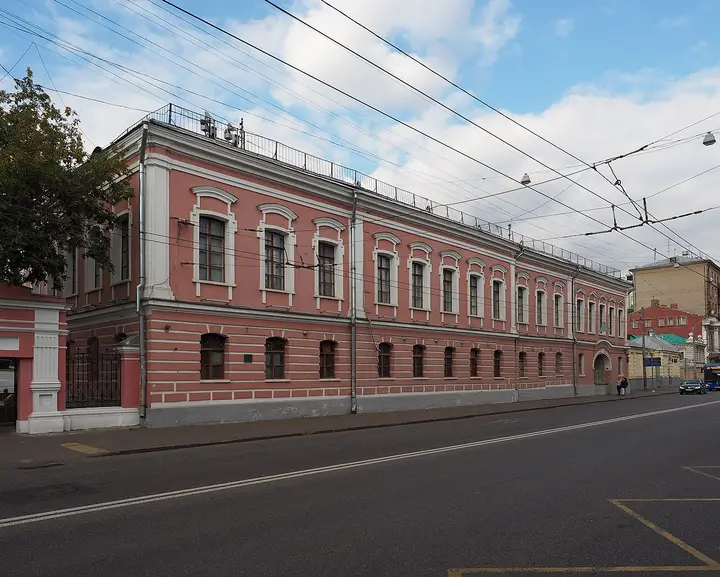

Фото: Svetlov Artem, CC BY-SA 4.0 · Wikimedia Commons
Галерея в старинной усадьбе · ЦАО
Галерея «Другое дело»
Антикварная галерея в особняке XVIII века на Басманной: джаз у винтажного рояля, кабаре и вечера по мотивам фильмов Дэвида Линча.
- ₽₽ · 1 500–3 000 ₽ на человека
- в 2 планах
Позвать сюда: Галерея «Другое дело»Открыть в каталоге: Галерея «Другое дело»Маршрут до места: Галерея «Другое дело»
Адрес и детали
- Адрес
- Старая Басманная ул., 15А, стр. 4
Открыть на Яндекс Картах (в новой вкладке) - Метро
- м. Красные Ворота
- Округ
- Центр (ЦАО)
- Цена
- 1 500–3 000 ₽ на человека
- Проверено
- работает — проверили в октябре 2026
Планы с этим местом 2
- Усадьба Муравьёвых-Апостолов · Музей-усадьба · м. Красные Ворота
- 4 минуты пешкомГалерея «Другое дело» · Галерея в старинной усадьбе
Выставка в усадьбе Муравьёвых-Апостолов с лепниной, люстрами и полуротондой с видом на Старую Басманную, а в четырёх минутах — джаз у винтажного рояля в антикварной галерее «Другое дело».
Открыть план: Усадьба и джаз на БасманнойПозвать сюда: Усадьба и джаз на Басманной
Фото: NVO, CC BY-SA 3.0 · Wikimedia Commons
- Галерея «Другое дело» · Галерея в старинной усадьбе · м. Красные Ворота
Антикварная галерея в усадьбе XVIII века: джаз, кабаре и вечера по мотивам Дэвида Линча.
Открыть план: Джаз в особнякеПозвать сюда: Джаз в особняке
Фото: Svetlov Artem, CC BY-SA 4.0 · Wikimedia Commons


Похожие рядом
Что ещё рядом

Как позвать
- Выбери план, место или событие — в карточке адрес, цены и маршрут в Яндекс Картах.
- Нажми «Позвать сюда» — соберётся приглашение-игра для свидания или голосование для компании.
- Отправь ссылку в любой мессенджер: тебе ответят, а компания отметит, куда и когда может. Бесплатно и без регистрации.